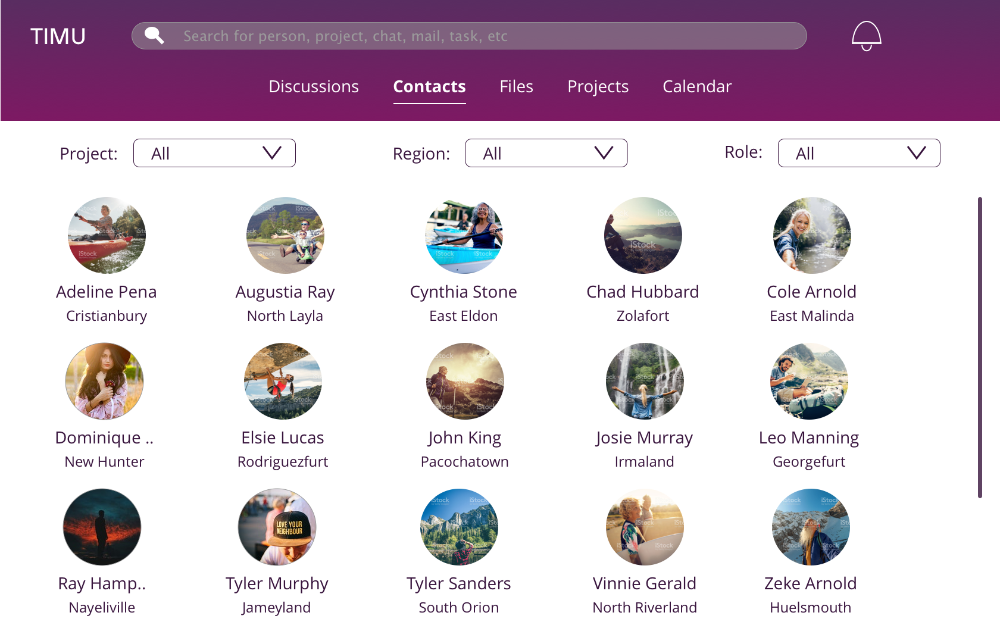

TIMU Redesign
As part of our UI/UX consulting class, we were given a tool - TIMU, a comprehensive and integrated project management tool. It was built to make collaboration within office and educational spaces easier, without the need to link to various third party tools. The task given to us was to find one pain point and fix that in the first iteration. While this product had identified a valid market, there were issues with the execution of the product. The product was difficult to navigate, the intended actions were difficult to find and the overall user experience of the product was frustrating. The following is some user feedback:
Solution:

Exisiting home page

New home page
User Interviews
Interviews were conducted with about 5 people to understand the followning things:
- What is the first thing you look at when you start your work day?
- How do you go about your regular work day?
- How often do you think you do the following tasks - Check your email, try to contact someone, check story board?
- What is the most common purpose of attempting the above listed tasks
- What tools are you currently using to help you accomplish your daily tasks?
After the interview, there was an exploratory Usability Test done. From this a Heurisitc Evaluation was prepared.
From the answers to the above questions, I was able to create the following personas:


Competitor Analysis
The major competitors for this kind of tool were Asana and Basecamp.
Some other tools that are used to accomplish the seperate tasks are Slack, Google Drive, Outlook, GMail, Skype, Jira and many others.
Although Timu provided similar or better services in terms of features, what it lacked was just simplicity of use.
What would also give TIMU an upper hand would be to provide project reporting tools using the available data.
Information Architecture

Since the system is so complex, understanding the information architecture was essential to figuring out navigation.
Iteration One:
In the first iteration, the navigation and menu of the product was refined by -
- Extracting the most commonly used menu items and displaying just those items.
- Removing the two layered vertical menu, as it was confusing the users and not behaving as they expected.
- Having a global horizontal menu for easy access.
- Having a horizontal menu when needed, within the context of the chosen primary menu item.
- Visual tweaks to increase readability.
Initial sketches
A number of hand sketces were done to try out multiple layouts, and see which one was the simplest and made the most efficient use of space.
Mockups
Using the sketches as a base, and after testing them out, the following mockups were created and were tested through InVision's User Testing feature.



"I cannot find where anything is!"
"The app doesn't work the way I think it does."
"I don't understand what these buttons are supposed to do"